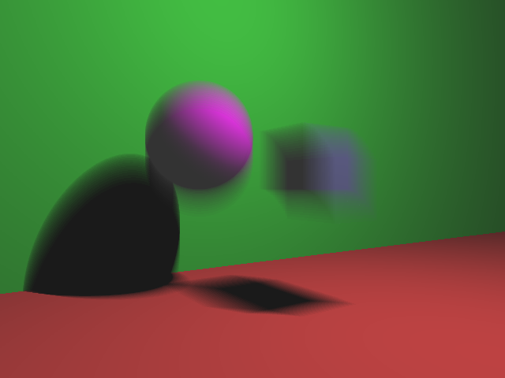
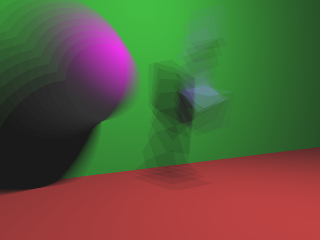
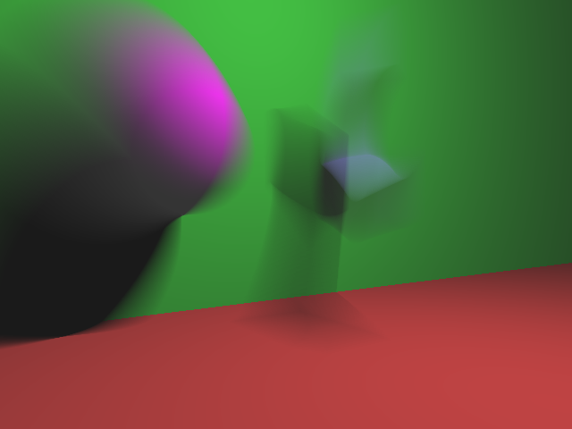

For my final project, I implemented motion blur into my raytracer. This allows you to add extra fields into a pov file including "velocity", "rotation_velocity", and "scale_velocity". Given these fields, the raytracer will render images with these velocities with motion blur over the course of one second. There is also an optional "frames" field that allows you to specify how many frames to actually render in that second (by default it is set to 10).
To create motion blur, I create a color buffer the size of the image in order to collect the color at each pixel for multiple different scenes. Between each scene, we must update the positions of each of the objects in the scene and recreate their transform matricies.
void drawMotionScene(const RenderRequest & rr, const Scene & scene) { float dt = 1.f / rr.frames; vec3 color_buffer[rr.width][rr.height]; Image image(rr.width, rr.height); for (int i = 0; i < rr.width; ++i) { for (int j = 0; j < rr.height; ++j) { color_buffer[i][j] = vec3(0); } } for (float t = 0; t < 1; t += dt) { for (int i = 0; i < scene.objs.size(); ++i) { scene.objs[i]->updateVelocity(dt); scene.objs[i]->init(); } for (int i = 0; i < rr.width; ++i) { for (int j = 0; j < rr.height; ++j) { color_buffer[i][j] += pixelColor(rr, scene, i, j, false); } } } for (int i = 0; i < rr.width; ++i) { for (int j = 0; j < rr.height; ++j) { vec3 color = color_buffer[i][j] * dt; unsigned char r = (unsigned char) round(color.r * 255.f); unsigned char g = (unsigned char) round(color.g * 255.f); unsigned char b = (unsigned char) round(color.b * 255.f); image.setPixel(i, j, r, g, b); } } image.writeToFile("output.png"); }
The velocity update involves updating the transform matricies to reflect how far the object would have moved. It multiplies it my dt which is 1/frames so that it moves less each frame when the frame count is higher allowing it to move the same distance overall. I also added a gravity component by increasing the negative y acceleration in every frame. I also overwrote the method for plane objects to prevent the floor from falling.
virtual void updateVelocity(float dt) { velocity += glm::vec3(0, dt * -9.8f / 5, 0); translate += velocity * dt; rotate += rot_velocity * dt; scale += scale_velocity * dt; } virtual void init() { model = createM(translate, rotate, scale); minverse = glm::inverse(model); normal_model = glm::transpose(minverse); center = getCenter(); }

This images showcases pure velocities - the cube has a velocity in the positive x direction and the sphere has no velocity. However, both of them are simulating gravity so actually have negative y acceleration.

This scene showcases the cube having a rotation velocity about the x axis and the sphere having a uniform positive scale velocity.

This is the same scene as above rendered with 100 frames instead of 10.
Ian Dunn